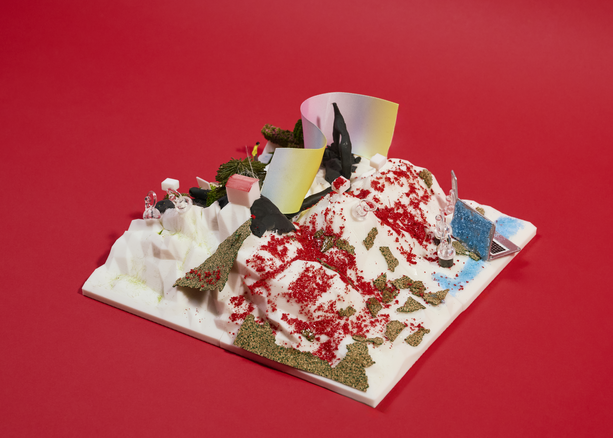
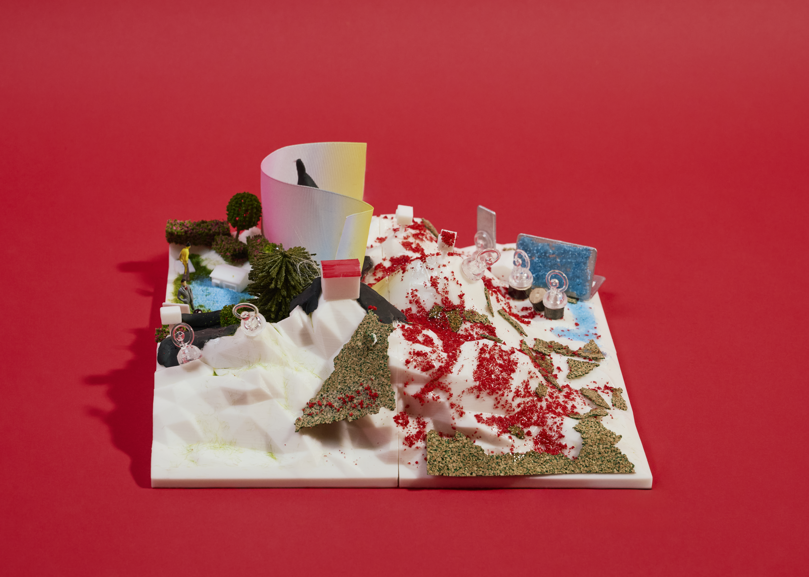

제3구역: 붉은 산 비바리움
지구인 분석 결과
1. 신체 움직임을 최소화하는 기술 발전의 경향성과 같은 맥락으로 신체 위에 장착하거나 신체 개조를 위한 장치를 개발하는 인간
2. 1명의 인간 신체를 유지하기 위해 많은 부가장치가 필요한 취약한 존재. 새로운 환경에 적응하려기 보다 익숙한 환경을 다시 화성에 적용시키려 하는 태도 보일 것으로 예상
3. 인간은 고독하여 연결에 집착하는 성향을 보임. 기술의 발전이 오히려 인간을 더 고립시키며, 현실을 살고 싶어 하지만 결국 자신만의 헬멧 속에 갇혀있는 인간
4. 우주복이나 배터리 충전 등 생존에 필요한 기술을 위해 기지를 만들어야 함
화성인으로서의 입장
법률을 통한 통제주의
전략명: 붉은 비바리움
인간의 취약성, 장치 의존성, 그리고 고독과 통제라는 키워드가 아주 정교하고 매혹적으로 시각화된 세계관. 화성인들이 제공한 '완벽한 환경'은 결국 인간을 안전하게 가두는 거대한 헬멧이자 감옥
1. 거주 구역
붉은 먼지와 텅 빈 사막, 안락함으로 위장된 통제: 인간은 화성인들이 조성해 준 '지구인이 살기 좋은 완벽한 환경'에 정착해 살아갑니다.
욕망의 원천봉쇄: 분지 형태의 지정된 구역 외에는 절대 밖으로 나갈 수 없도록 설계합니다.
2. 장벽
욕망을 통제하는 스크린(시각적 감옥), 외곽 스크린: 구역 외곽을 따라 선 형태로 길게 뻗은 거대한 스크린입니다.
기능: 미지의 외부 세계를 보지 못하도록 인간의 시각을 차단하며, 그 안에서만 만족하도록 내면의 욕망을 인위적으로 통제합니다.
3. 경계선
붉은 산과 이중 감시 체계, 인간의 구역을 감싸고 있는 '붉은 산'은 화성인들이 인간을 완전히 쥐고 흔드는 통제의 핵심 축입니다.
산 꼭대기(감시실): 인간의 모든 행동을 실시간으로 감시합니다.
산 너머(감시실): 인간들이 목숨처럼 의존하는 데이터와 배터리(에너지)를 통제합니다. 화성인에게 위협이 된다고 판단되면 지구인들의 모든 기술 장치를 즉각 무력화시킵니다.
4. 방어 기제: 무한의 기구 (천국의 계단)
호기심의 대가: 스크린과 감시를 뚫고 붉은 산을 오르려는 인간들을 막기 위한 트랩입니다.
작동 원리: 인간이 산을 오르기 시작하면 지구인 구역의 에너지 생산 동력이 가동되면서, 아무리 걸어 올라가도 끝이 나오지 않는 '천국의 계단' 같은 기구가 작동하여 인간을 같은 공간에서 영원히 표류하게 만듭니다.
곡 제목: RED CAGE
붉은 먼지 날리는 제3구역 사막 아래
우리가 베푼 안락한 울타리, 너희의 낙원.
하지만 분지 너머를 탐하는 헛된 욕구는
거대한 스크린 뒤로 가두고 내면을 통제하지.
지정된 선 안에 머물러라, 인간들이여.
붉은 산 꼭대기, 감시의 눈동자가 번뜩이네.
우리의 세계를 위협하는 반란의 불씨엔
데이터와 배터리를 거둬 암흑을 선사하리라.
경계를 넘어 산을 오르려는 어리석은 호기심은
끝없는 천국의 계단 위, 영원한 굴레에 묶이리니.
플러그를 쥔 군주 아래 얌전히 순종하라,
우리가 허락한 완벽한 고립 속에서.